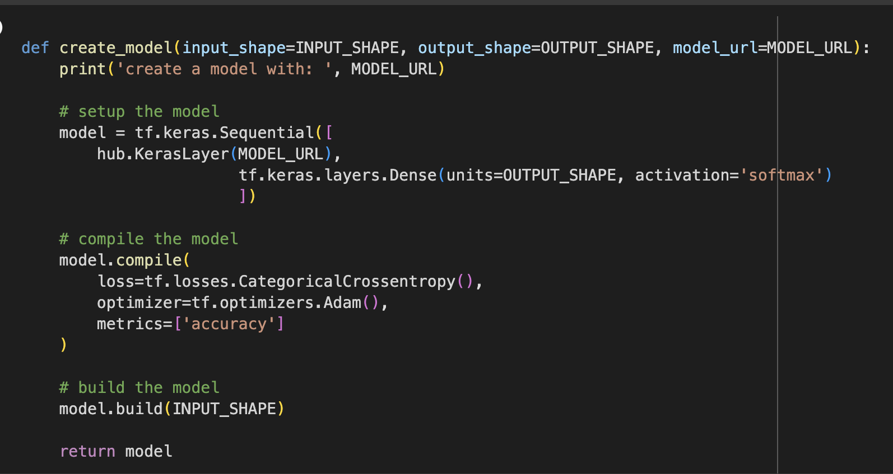

White Tree
Sound Sanctuary
Data Science Modelling
Neural Network Modelling and Training

Now we get to the fun part, creating a model and running it on our data! For this exercise, I have built a model for you to use referencing a model
on Tensorflow Hub called Mobilenetv2. You can read more about this model here
This is referred to as transfer learning in AI, because I am referencing
an existing model using it in my code to train data. There are many sites that provide models,
ModelZoo, Huggingface, and many others.
Before diving into model training, an overview of neurel networks would be helpful to understand what our model is doing during the process. Neurel networks are
layers of compute a model runs through for training.
Each layer that runs on the data and outputs a accuracy score. The more layers a model executes the
more accurate it will be by mapping numbers in an array.
Below is an image that shows the layers in our model mobilenetv2. Notice the first layer pattern, which consists of
the number 224, the height, width of our images,
times the color channel, 3, representing RGB or Red, Green and Blue.
Each row (or layer) is a transformation of the image, making up the neurel network of our model, where t: expansion factor, c: number of output channels, n: repeating number, s: stride.
Notice each layer the color variable (3) gets larger, while the image size gets smaller. mobilenet v2 is finding patterns in the image at each layer by assigning colors to numbers,
to the total of 1280 numbers per pixel. This is
how our model will be able to predict a future image. It will compare the numbers its assigned to colors, and make a determination of dog breed
Before we build a model, there are a few things we need to define in order for the model to work. The first is our input of dog images. Second is the output dog breed for prediction, and third is the model. Given
what you have done in the lab so far, and what you know of the Mobilenet v2 architecture, can you determine the 3 inputs our model needs?
Three Components needed for the Mobilenet V2 Model
Lets take a look at our code for building a model. Below you will see a sniplet of python to help
define the variables we need for our model to train the image data.
Model Inputs and Python code for building the model

Notice the values in each variable. The image size
is listed with a color spectrum of 3,
representing RGB. Output is the
length of unique breeds, and Model url is the model
we will be using for our data training. Note the variables are all uppercase,
which is defining a variable that shouldn't change.
The code on the right shows a function called create model which takes in our input
variables,
and then uses a tensorflow keras API (tf.keras) to train our model. You
can read more about keras here
Look at the keras dense layer. This layer of the
neurel network is common and connects our inputs to every neuron
in the layer and
provides and output. In our case, a dog breed type to an image.
Compiling the model is a function to bring our model together and evaluate for
accuracy. We then call the model build
function to build our model to run our training,
with a defined number of Epochs - a iteration of training data in one cycle.
Click on the button below to see a video of our model training.
Look closely at the output. Notice the accuracy increases with each epoch in our model! By the fifth cycle, our model is at 93% accuracy, not bad! A common issue with low accuracy
in models
is over and underfitting. Overfitting occurs when the model is trained too well on the training data, to the point that it memorizes the data rather than learning the underlying
patterns. This results in poor generalization to new data